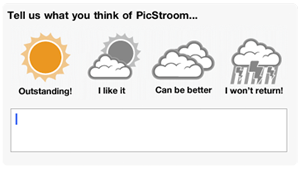

PicStrooms Weather Channel
It is hard to get feedback from users. Smiley.37signals.com inspired us to open a communication channel to PicStrooms users. We call it the Weather Channel. Users can rate their experience within the app by clicking a weather icon and leave a 255 characters comment. Comments are stored anonymously.
On this page we show all feedback we received.
Some replies to users comments:
- We hear your feature suggestions/request please keep sending them on. They will greatly influence our release planning.
- About adding Unlimited Streams - Our In App purchase gives you truly unlimited streams. Be aware that due to performance limitations of the iPad Gallery Streams can be added 7 at a time. Of course, you can add another 7 when you added these 7! So you can add 7 times unlimited streams.
- We love the compliments

Inspired by smiley.37signals.com
Icons from flukeout.com/free-weather-icons
The overall Weather Report
40%
34%
16%
10%
Your detailed Weather Reports
Updated June 12th, 13:06 CEST
Really intuitive. Very easy to use and great UI. Just need a landscape mode and it will be outstanding.
Make it free, Easier to understand icons on the side, and leave the grey area between the feed bars
Really
Confusing??????
Rad app
Brilliant
New era
Great App. Undoubtely the Flipboard 4 photos!!! But not free!! Thks
Oi
Good!!
Nice One
Impossible to delete abduzeedo
Fantastic app ! I m a french graphic designer and with you re app I can sync my website portfolio with iPad. Thanks
Simply brilliant!!
Muddamudda
Needs some kind of toolbar
Just discovering. Looks great. I like the concept. Keep pushing the envelope.
This is a great app for discovering inspiration. I would recommend adding a social media sharing option to pass amazing finds along to friends
Sh*t
Website depth could/should go deeper.
This is a Bait and switch app. Sucks you in with additional streams and then limits you to 7 from the gallery. Really a rip-off and unfair business practice.
Lovely program, will probably upgrade to paid version very soon!
Delete feed well updating
Great app!
It very perfect.
Amazing. A well thought, designed and innovative app. Thank you!
Great app! I like the free version. The paid version I presume will be outstanding.
Awesome app! Would be great if I can rearrange the stream once added
Lame
Inspiring UI
Needs image sea
Needs more free streams. 4 is BS. Needs image search and much more. Probably won't use much unless it's improved. Layout is nice.
But why 2 bucks?!
Beautiful!
Deleting streams is too cumbersome. Maybe tap-and-hold works better? Otherwise, quite neat, but flipboard is better from an eye candy perspective.
Great app
Good!
1 enhancement and the app will be perfect
Nice interface, clever concept.
It would also be sweet if somehow there was a slideshow option!
I'd like to see 'send to picasa' or 'send to flickr'... I really like to see those
Hey I just purchased 3.99$ and I added some more. But only 7?!?!?! What the hell?! How about Infinite?!
Great app!!!! The only comment I have is that I wish I could organize the order of the streams. It should be included in the edit stream section with a simple hold down and move the stream order around.
So thanks
Beautiful photos!!!!!
What a surprise! This is really great!
Nice ui
It's a great start. Would like to be able to save to tumblr in addition to dropbox. Also would like the option to have images fill screen. Pulling more than 20 photos into a stream would be nice as well.
This is future